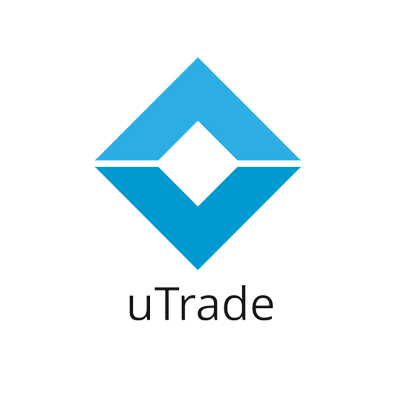
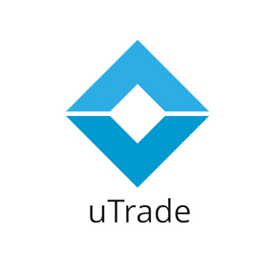
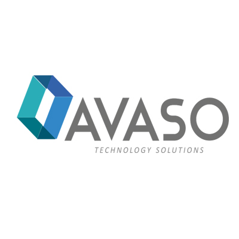
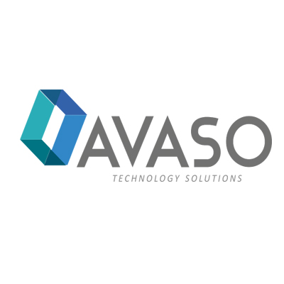

Understanding POSH Compliance
The Prevention of Sexual Harassment (POSH) Act is a cornerstone legislation that protects employees against workplace harassment. It mandates the establishment of an Internal Committee (IC) in every organization with 10 or more employees and outlines clear procedures for filing and resolving complaints.
Beyond legal compliance, organizations must foster a culture of respect, equality, and safety. This involves regular training, awareness programs, and strong policy enforcement. When employees feel secure, productivity and morale naturally rise.
In this article, we explore the POSH Act's provisions, employer responsibilities, and strategies for building a workplace free from harassment. Real-world examples and expert tips will guide HR teams and leadership in ensuring compliance.

 

 
